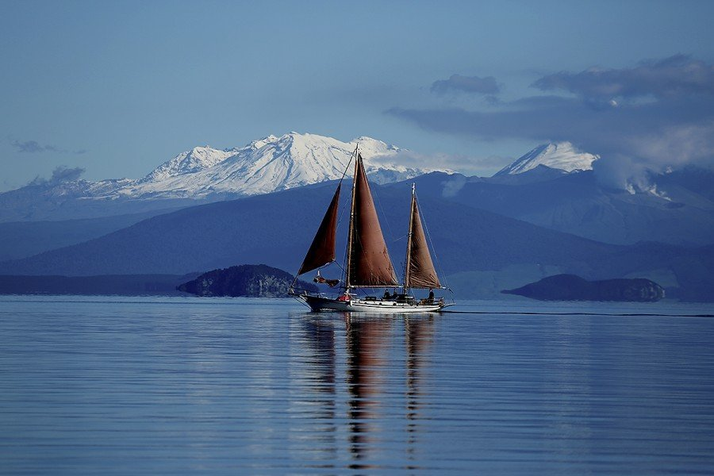
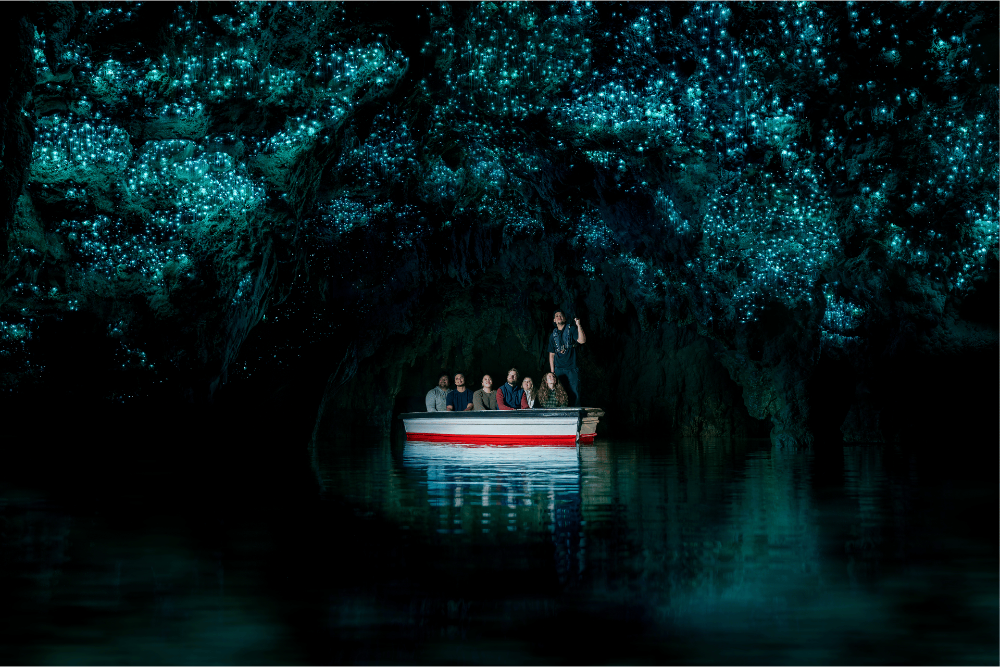

Central North Island

Te Puia
Te Puia is a well-known, award-winning cultural and geothermal destination where native wildlife, geothermal wonder, and Māori culture all come together to create an amazing experience. Natural geysers, boiling mud pools, steaming fumaroles, and a nocturnal kiwi enclosure abound in the area, providing a striking setting for cultural storytelling with our guides. Pōhutu Geyser, the largest active geyser in the Southern Hemisphere with eruptions up to 30 meters high, sits at the center of it all. For almost a century, the New Zealand Māori Arts and Crafts Institute (NZMACI) has trained wood, stone, and bone carvers and weavers. These artists and students strive to ensure that ancestral knowledge is transmitted from one generation to the next.

Lake Taupo
Nearly 2,000 years ago, a massive volcanic eruption clouded the skies over Europe and China, creating Taupō. The boiling mud pools, steaming craters, and geysers at the Craters of the Moon provide proof of the lake's violent beginnings. Swimsuits and paddlers can take advantage of warm, geothermal water currents at certain of Taupō's beaches. The most popular tourist destination in New Zealand is the stunning Huka Falls, which is located just north of Taupō. Every second, approximately 220,000 liters of water thunder over the rock face.Taupō provides an unmatched astronomy experience for people who enjoy the nite sky.

Waitomo Gloworm Caves
There are some amazing tourist destinations in the Waitomo area. Experience the renowned boat trip beneath thousands of enchanted glowworms and immerse yourself in more than 125 years of natural and cultural history. Our knowledgeable guides will take you into this fantastic setting while explaining the geological and historical significance of the Caves. The Waitomo Glowworm Caves are highly sought-after destinations in New Zealand, drawing both domestic and foreign tourists. The formation of limestone at the ocean's bottom more than 30 million years ago marked the beginning of the Waitomo tale. These limestone formations are now a must-see location and one of New Zealand's most inspirational natural wonders.